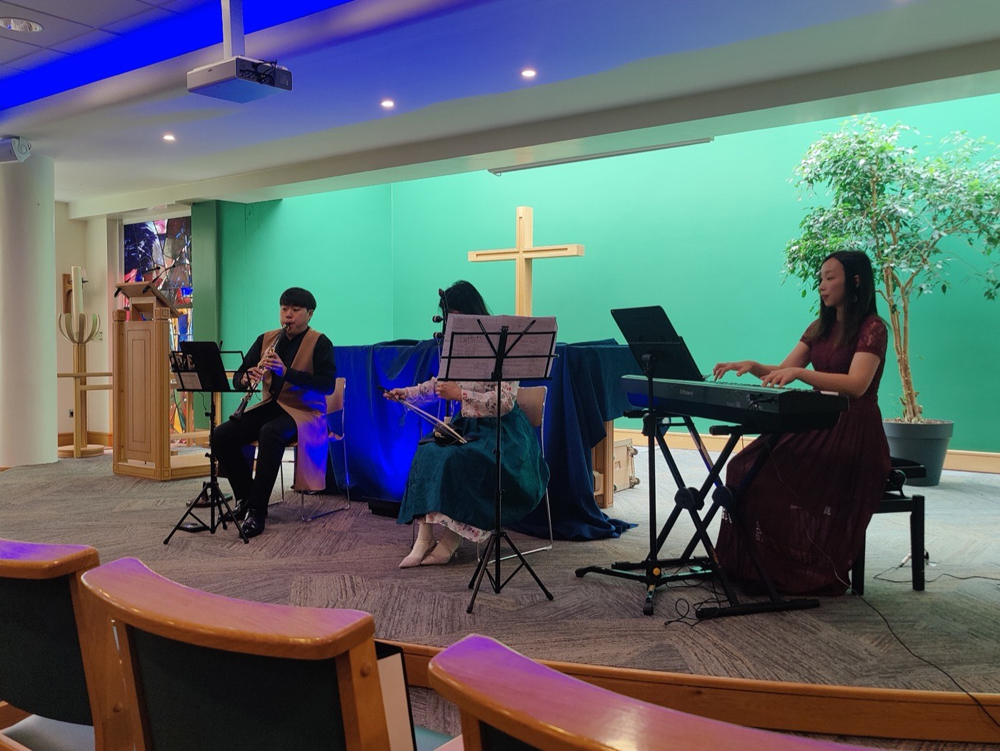

기관 파트너십
방과 날짜만 알려 주세요.
요양시설·병원·본당·커뮤니티 센터를 위한 안내이고, 지자체·재단·기금·기업을 위한 안내이기도 합니다. 문의는 2분이면 되고, 방을 뺀 나머지는 전부 저희가 가져갑니다.
받으시는 것
하루가 달라지는 방에 실황 연주가 들어갑니다. 직접 와서 보실 수 있습니다.
후원은 병동과 휴게실과 본당 홀에 연주자를 세웁니다. 그리고 여러분의 팀에게 가서 볼 수 있고 함께할 수 있는 무언가를 줍니다. 모든 파트너십에는 담당자의 이름, 그 돈이 한 일을 날짜와 함께 적은 보고, 언제든 와서 보시라는 초대가 따라옵니다.
파트너가 되는 세 가지 길, 약속은 하나
- 담당자 한 사람의 이름
- 그 돈이 한 일을 날짜와 함께 보고
- 언제든 와서 보시라는 초대
방을 맡고 계시다면
오선 위쪽은 전부 차에 실려 옵니다.
피아노도 무대도 예산도 없는 휴게실이 음악회를 열 수 있습니다. 30분에서 60분, 어쿠스틱으로, 곡마다 쉬운 말로 소개하고, 관객이 낼 돈은 없습니다. 공공배상책임보험에 들어 있고 일에 필요하면 Garda 신원조회를 마칩니다. 서류는 가기 전에 보내 드립니다.
그 방이 준비해야 하는 것
휴게실 음악회, 또는 아트리움 드롭인
입소자와 환자, 가족과 직원이 이미 있는 그 방에서. 2026년 8월 Tallaght University Hospital 음악회는 30분, 어쿠스틱, 오가며 듣는 형식이었습니다. 요양시설 음악회도 대개 같은 모양입니다.
전례 음악, 또는 미사 뒤의 음악회
스무 번의 찾아가는 음악회 가운데 열여섯 번쯤이 본당과 성지, 수도원과 전례였습니다. 창립자는 더블린의 한 본당에서 음악 감독을, 다른 본당에서 오르가니스트를 맡고 있습니다. 제의실에서 먼저 듣고 싶어 하는 말이 무엇인지 압니다.
여러분의 방에서 여는 한 학기 과정
열 명에서 열두 명이 둥글게 앉을 따뜻한 방, 한 학기 동안 매주 한 번, 담당자 한 사람. 교사와 교육과정, 악보, 학기 말 음악회는 저희가 가져갑니다. 공간이 준비할 것과 저희가 할 것.
- South Dublin County Council 예술과
- Tallaght University Hospital
- Rua Red
- The Civic Theatre
- Clondalkin Lodge
- Mulhuddart Community Centre
- 프레젠테이션 수녀회
- 성 골롬반 선교 수녀회
- Dalgan Park
- TU Dublin
- Our Lady of Dolours, Dolphin’s Barn
- Church of the Three Patrons, Rathgar
- HSE EVE Goirtin Hub
- Morning Star Hostel
- 파리 외방전교회
“음악으로, 그는 홀로 남았을 이들에게 격려와 존엄과 영적인 동행을 건넵니다.”
더블린 보좌주교 도날 로치 · 2026년 2월 16일자주 받는 질문
네 가지, 있는 그대로 답합니다.
단체 전체가 아니라 프로그램 하나만 후원할 수 있나요?
네. 프로그램이나 공간의 종류를 지정해 주시면 그 후원은 거기에만 쓰고, 거기에 맞춰 보고합니다.
기부금 세제 혜택이 있나요?
아직 없습니다. 비영리 보증유한책임회사로 설립을 준비 중이고 등록 자선단체가 아니어서, 기부금은 세제 혜택 대상이 아닙니다. 오해가 생기기 전에 분명히 적어 둡니다.
후원사 이름은 어디에 실리나요?
후원하신 연주의 인쇄 프로그램, 이 사이트의 후원 페이지, 그리고 받으시는 보고서에 실립니다. 동의를 받은 뒤에만, 그 밖의 자리에는 싣지 않습니다.
음악회를 열려면 공간이 무엇을 준비해야 하나요?
방 하나, 거기 살거나 일하는 사람들, 담당자 한 사람입니다. 연주자와 악기, 보면대, 프로그램, 보험은 저희가 가져갑니다. 무대도 피아노도 필요 없고, 관객이 낼 돈도 없습니다.
